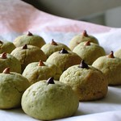

Dedication to Matcha

Sorry! We only serve people who love Matcha as we believe "Focus makes perfect". We started the home-based cookies business in 2010 and turned out to be one of Canadian TOP 35 best sellers in 2019. Ten years' baking experience makes us handle the delicate fusion of matcha and fudge. We devote ourselves to let our customers enjoy the perfect balance of matcha flavor and cookies.
Some people are probably not familiar with matcha, and they couldn’t even tell the difference from traditional tea. Actually, matcha is an alternative to green tea but has its own character. Besides its unique more vibrantly green color, it smells grassy and feels smooth, featuring a more robust flavor than traditional green tea. There are actually two main grades of matcha: ceremonial and culinary. Within culinary matcha, there are five extra categories: premium, café, classic, ingredient and kitchen. Many different ways would be used to test the quality of matcha powder, for example, the appearance, processing method and ingredients used. However, we are not satisfied with the matcha powder sold in the market after exploring both online search and offline sales. Thus, we decide to import tea leaves from Japan directly and grind them up by ourselves. In this way, we could not only control the fineness of the powder but also improve the treatment prior to processing, which definitely helps make our taste as original as possible.
We treat but never cheat
We always believe handmade food is healthier and richer, as we could change our recipes all the time according to our customers’ feedback. Compared with packaged cookies from factory, we have more options to choose and it’s important to ensure people of all ages, especially elderly people supply the nutrients they need.
Some of our customers might find our matcha cookies not sweet enough. Yes, we cut out milk, sugar, chocolate or cream as we don’t want to surrender to the taste people are used to. What’s more, we believe any addition of sweeteners or other ingredients would destroy the pure flavor of our matcha cookies. We are confident to make tasty but healthy cookies all the time. So why not have a try if you don't believe it!
Health Benefits of Matcha
“Matcha is a type of green tea made by taking young tea leaves and grinding them into a bright green powder.” The main reason why matcha has become a recommended part in our daily life is that it not only keeps us awake but has a relaxing effect as well. Unlike the quick and long-lasting stimulating effect of coffee, matcha provides less caffeine, which would not raise but drop our heart rate and blood pressure significantly. Matcha is also recommended for people who are on diet, as it can also boost our daily metabolism and burn fat. According to a population-based study in the American Journal of Clinical Nutrition, researchers compared groups of people who exercised after drinking matcha green tea with groups who didn’t. The study showed matcha helped burn more than 25% fat during the exercise. What’ more, matcha contains “a class of antioxidants called catechins, which is believed to have cancer-fighting effects on the body. Clinical trials suggest that matcha's catechins suppress mitochondrial metabolism which prevents the re-fuelling of damaged cells and renders them inactive (making them die eventually)”.
Unlike regular green tea bags which might contain potential toxic chemicals such as pesticides. We insist on natural preservative free products. We usually import the whole matcha tea leaves from Japan and shield them from sunlight for about half a month which helps increase the amino acids. Then we’ll remove the stems and veins from leaves and grind the rest into fresh powder. Following the procedure, we can preserve more catechins than regular green tea so that serve our clients in a heathier way. However, we also strictly control the amount of match powder in our cookies as high consumption of match might cause harmful side effect as well.
Learn More